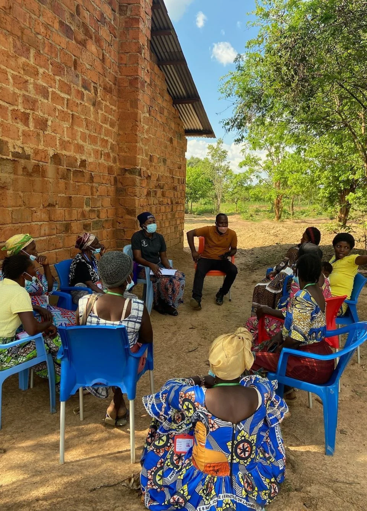
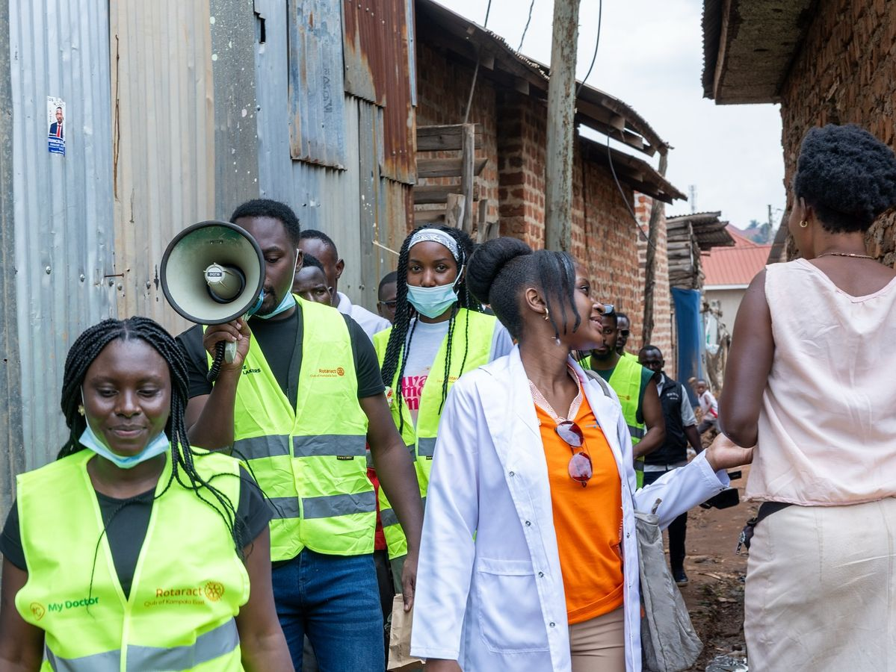
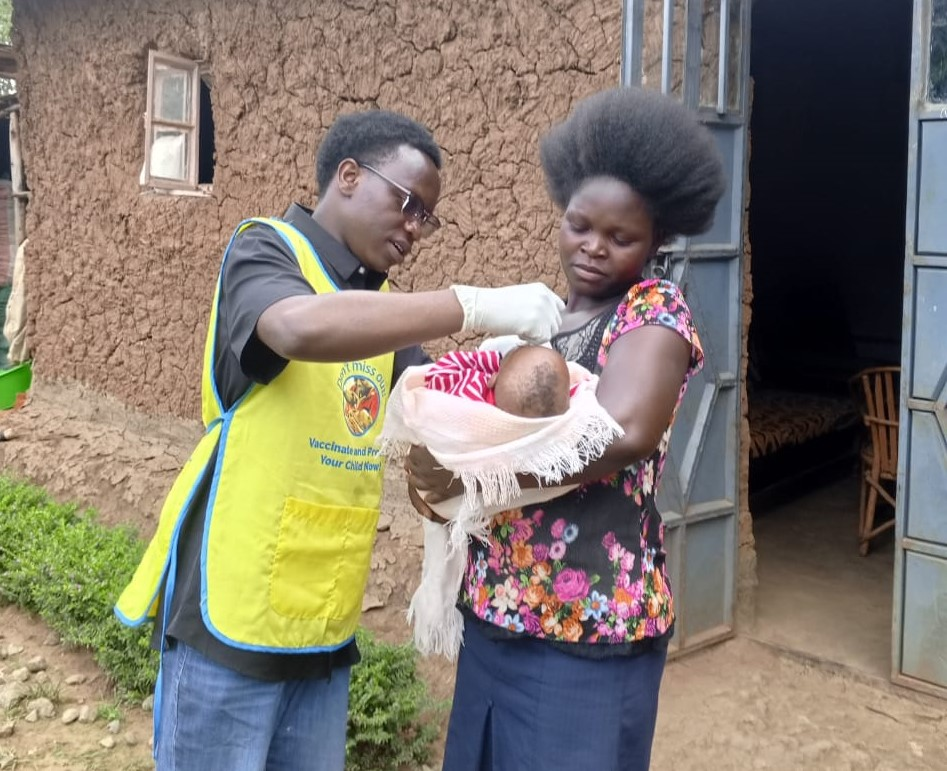
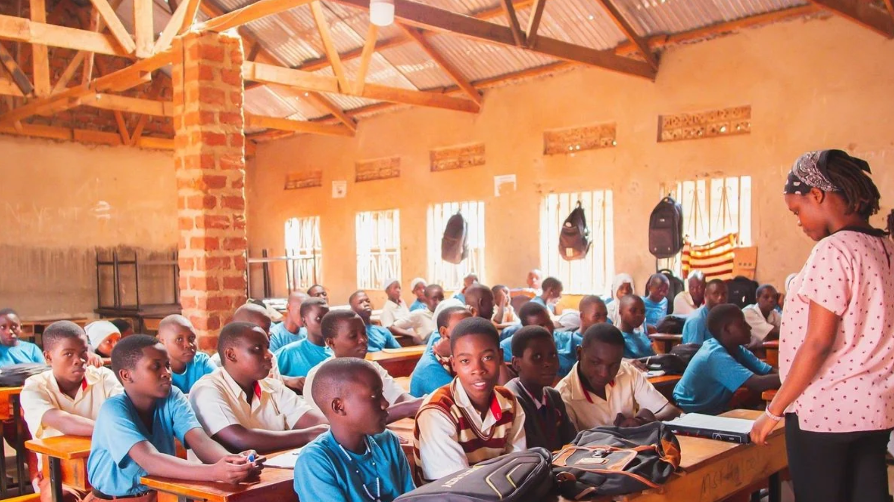
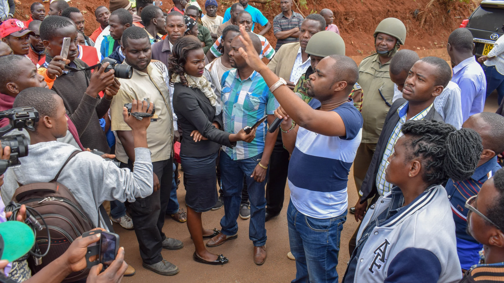

01
HealthConnect
Community Health Outreach
Takes healthcare closer to the people it serves through medical camps, community health check-ups, health education and outreach activities.
Proposed programme, awaiting hospital approval.
St. Martha Hospital’s community health work reaches into homes, schools and neighbourhoods across Kiminini and Trans Nzoia, through education, prevention and public awareness alongside everyday clinical care.

Nine programmes, one community health commitment
Each programme meets people where they live, learn and raise their families. Together they describe how St. Martha proposes to practise preventive healthcare beyond the consulting room.

Community Health Outreach
Takes healthcare closer to the people it serves through medical camps, community health check-ups, health education and outreach activities.
Proposed programme, awaiting hospital approval.

Immunisation for All
Focuses on vaccination, immunisation awareness and organised vaccination activities for children and other eligible groups.
Proposed programme, awaiting hospital approval.
Maternal & Child Wellness
Maternal health education, child health awareness, and antenatal and postnatal education that support healthy beginnings.
Proposed programme, awaiting hospital approval.
Nutrition & Healthy Living
Nutrition education, healthy eating awareness, family nutrition and healthier lifestyle choices.
Proposed programme, awaiting hospital approval.
Mental Health & Wellbeing
Mental health awareness and emotional wellbeing education that reduces stigma and encourages people to seek appropriate help.
Proposed programme, awaiting hospital approval.

Healthy Ageing Initiative
Health education, preventive healthcare awareness and wellness activities for older adults.
Proposed programme, awaiting hospital approval.

Healthy Schools Initiative
School visits, student health education, hygiene awareness, age-appropriate health talks and preventive health education.
Proposed programme, awaiting hospital approval.
Family Health Education
Health education for families and caregivers, preventive health awareness and informed healthcare decisions.
Proposed programme, awaiting hospital approval.

Community Health Learning
Structured health workshops, medical education sessions and practical health awareness activities for community members.
Proposed programme, awaiting hospital approval.
Five campaigns that ask the public to act
Where programmes run steadily, campaigns concentrate attention on a single message. These are the causes St. Martha proposes to champion.
Blood Donation Campaign
Encouraging voluntary blood donation, raising awareness about blood shortages and mobilising eligible donors through organised donation activities.
Proposed campaign, awaiting hospital approval. Dates to be confirmed.
Cancer Awareness Campaign
Promoting awareness of breast and cervical cancer, early detection, and the importance of seeking appropriate screening and medical advice.
This campaign shares awareness information only. Screening services at St. Martha are subject to confirmation.
Proposed campaign, awaiting hospital approval. Dates to be confirmed.
Health Awareness Campaign
Encouraging people to understand important health indicators such as blood pressure, weight and BMI, through health education and available clinical checks.
Proposed campaign, awaiting hospital approval. Dates to be confirmed.
School Health Awareness Campaign
Promoting health awareness among school-going children through school visits, hygiene education, nutrition awareness, vaccination education and age-appropriate health talks.
Proposed campaign, awaiting hospital approval. Dates to be confirmed.
Mental Health Awareness Campaign
Encouraging open conversations about mental health, challenging stigma, and educating communities about appropriate support and help-seeking.
Proposed campaign, awaiting hospital approval. Dates to be confirmed.
The programmes and campaigns on this page are proposals under review by St. Martha Hospital. Dates, activities and locations will be shared once they are confirmed.
In the meantime, our team can answer questions about community health work or about the care we provide today.
Contact the hospital